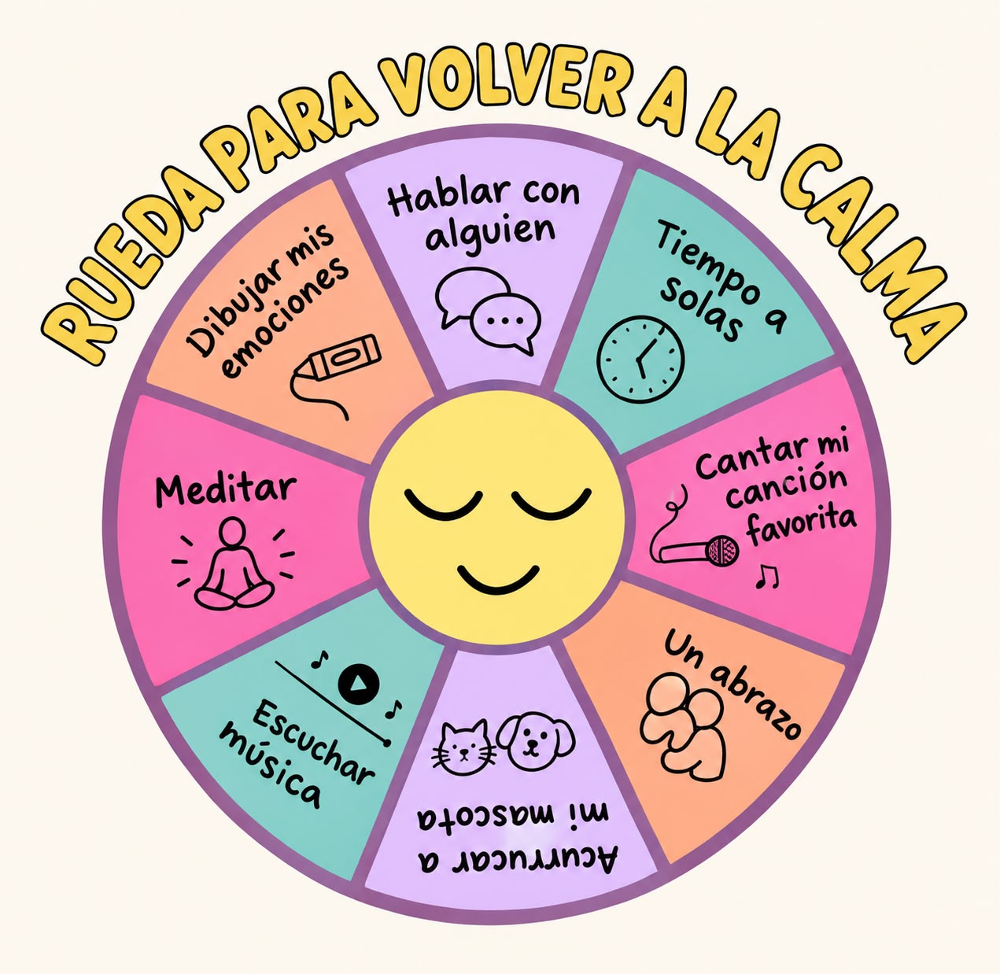
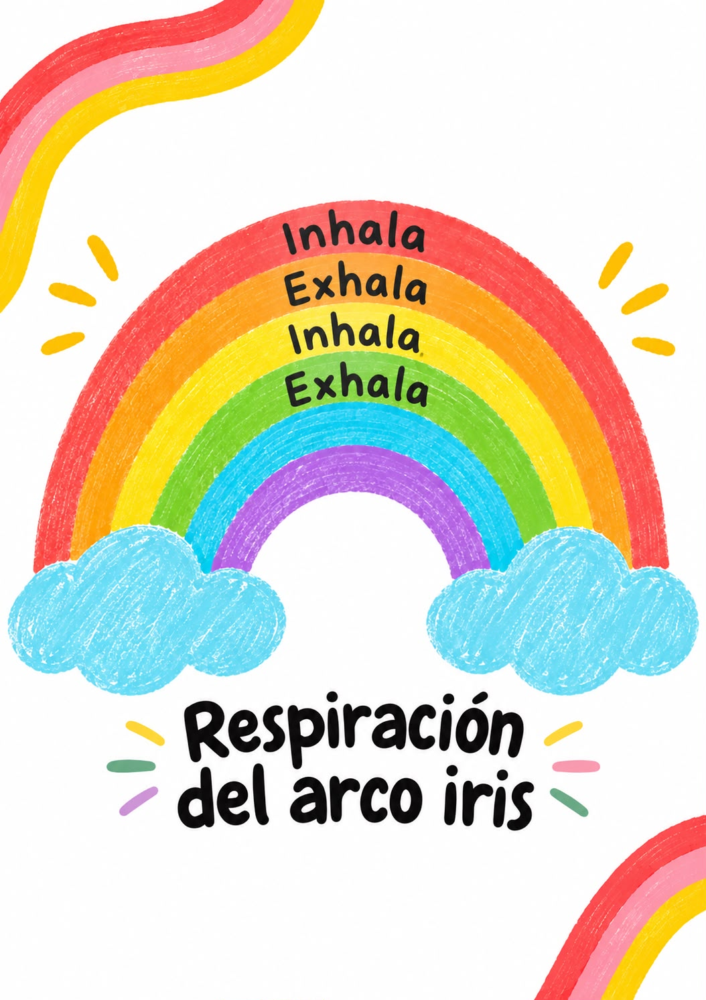
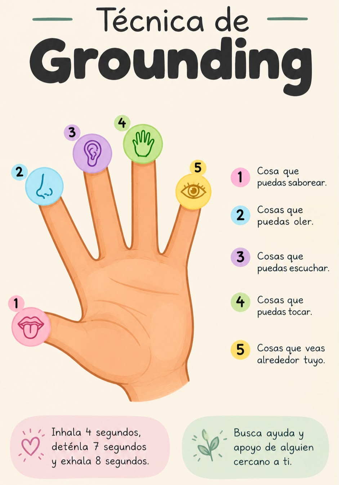

Escucharte también es cuidarte

¿Cómo estás hoy?
El bienestar emocional no significa sentirse bien todo el tiempo. Significa aprender a reconocer lo que sentimos, escuchar nuestras necesidades y tratarnos con paciencia.
A veces estamos tan pendientes de cumplir, ayudar y responder a los demás que olvidamos preguntarnos cómo estamos.
Pregúntate
●¿Cómo me he sentido últimamente, más allá de decir “estoy bien”?
●¿Estoy escuchando lo que necesito?
●¿Me estoy dando tiempo para mí?
●¿Respeto mis límites?
●¿Cómo me hablo cuando cometo un error?
●¿Qué podría hacer hoy para cuidarme?
Pausa de 5 minutos
●Hoy me siento…
●Hoy necesito…
●Hoy puedo cuidarme haciendo…

